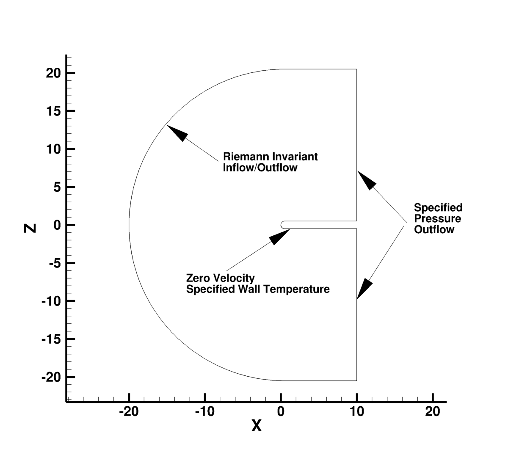

Public Access (formerly Langley Research Center)Turbulence Modeling Resource |
Return to: Turbulence Modeling Resource Home Page
TURBULENCE MODEL NUMERICAL ANALYSIS
2D Hemisphere Cylinder Validation Case
This case is designed primarily for numerical
analysis of turbulence model simulations; e.g., convergence properties, effect of order of accuracy, etc.
The purpose here is to provide a validation
case for turbulence models over a smooth
body in 2D.
The 2D geometry is taken as the centerline profile from the
experimental model studied in AEDC-TR-76-112, 1976 ("An Investigation of Separated Flow About a
Hemisphere Cylinder at 0- to 19-Deg Incidence in the Mach Number Range of 0.6 to 1.5" authored by Tsieh, T.).
The radius of the cylinder is 0.5 and the length of the body is 10.
This 2D case has never been processed (in terms of obtaining CFD results using
any specific turbulence model). However, the 3D version of this case (which corresponds with the
experiment) is available at
3D Hemisphere Cylinder Validation Case (OLD) and
3D Hemisphere Cylinder Validation Case (NEW).
Nonetheless, this page is still being maintained, and a large sequence of 2D grids
of the same family are provided here if desired. Only 2D structured grids are available.
The outer boundaries are located at different distances from the body,
depending on the grid generation parameters.
The boundary conditions are simple. The following plot shows the layout of
the hemisphere cylinder grids, along with typical boundary conditions for a typical far-field extent.
No experimental data is available for computation. The 2D turbulent
flow conditions should be run at M=0.4
and angle of attack of 1 degrees.
The Re/(unit grid length) = 0.35 million with a hemisphere radius
of 0.5 in the computational grid, corresponding to the same Reynolds
of the 3D experimental data.

What to Expect:
(Other turbulence model results may be added in the future.)
Return to: Turbulence Modeling Resource Home Page
RESULTS
LINK TO EQUATIONS
MRR Level
(not available)
N/A
N/A
Page Curators: Christopher Rumsey,
Ethan Vogel,
Clark Pederson
Last Updated: 01/06/2017